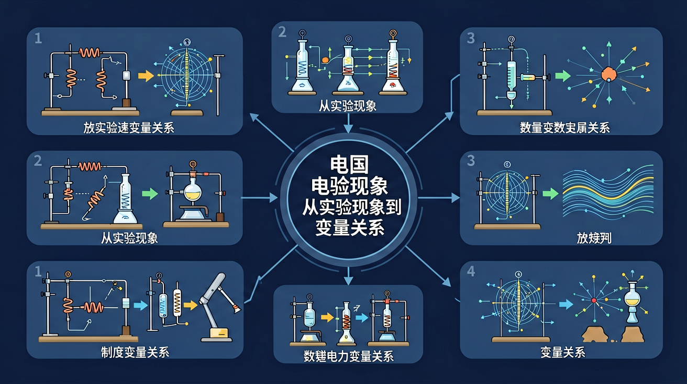
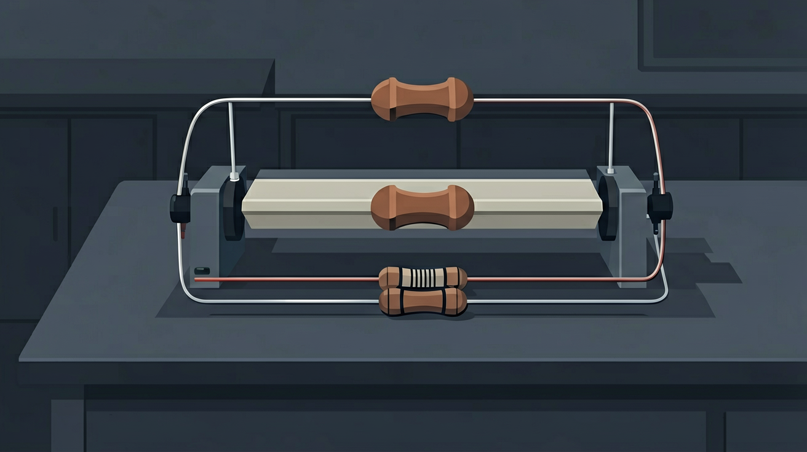
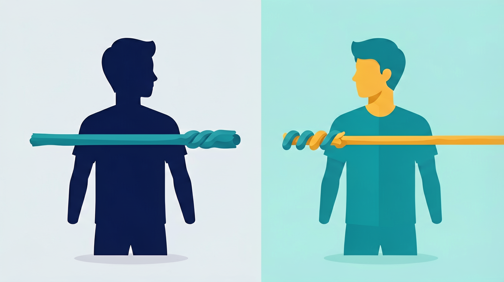

真实情境
调光台灯为什么能由亮变暗？
旋钮往往连着滑动变阻器：改变接入电路的电阻丝长度，从而改变电路电阻与电流，灯的亮度跟着变。
已有经验
细导线更热；长电线有时压降更明显。
真正卡点
把电阻当成“随电压变大而变大”的量。
本课任务
影响因素 → 变阻器 → 计算式辨析。
同样电压，为什么有的灯更亮？电阻到底在挡什么？

先选一个你关心的问题。后面的例子、提示和 AI 学伴都会围绕这个问题来帮你推进。
选择或输入后，本课会围绕你的问题展开。
旋钮往往连着滑动变阻器：改变接入电路的电阻丝长度，从而改变电路电阻与电流，灯的亮度跟着变。
细导线更热；长电线有时压降更明显。
把电阻当成“随电压变大而变大”的量。
影响因素 → 变阻器 → 计算式辨析。
电阻越大，同样电压下电流越小。
材料、长度、横截面积、温度。
改变接入长度 → 改变电阻。


定性：同种材料，R ∝ L / S（温度一定）
Skill 要求：数理化优先嵌入已验证的外部交互工具，不要只用自绘 Canvas 代替。
💡 改变材料、长度、横截面积，观察电阻变化；先控制变量再下结论。
若 iframe 被网络拦截，可新标签打开：https://phet.colorado.edu/sims/html/resistance-in-a-wire/latest/resistance-in-a-wire_zh_CN.html
同种材料、同样粗细，导线越长则
同种材料、同样长度，横截面积越大则
滑动变阻器改变电阻的主要方式是
“由 R=U/I 可知电阻与电压成正比”
探究电阻与长度关系，应保持不变的是
用三句话说明：调光台灯变暗时，电路里可能改变了什么？
勾选你已掌握的条目。